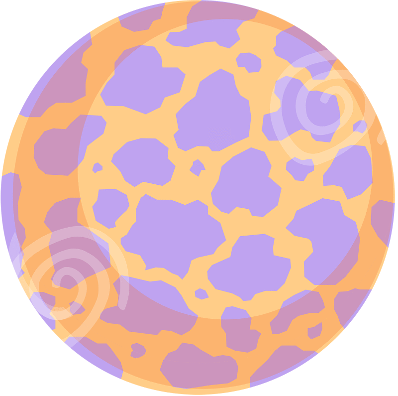
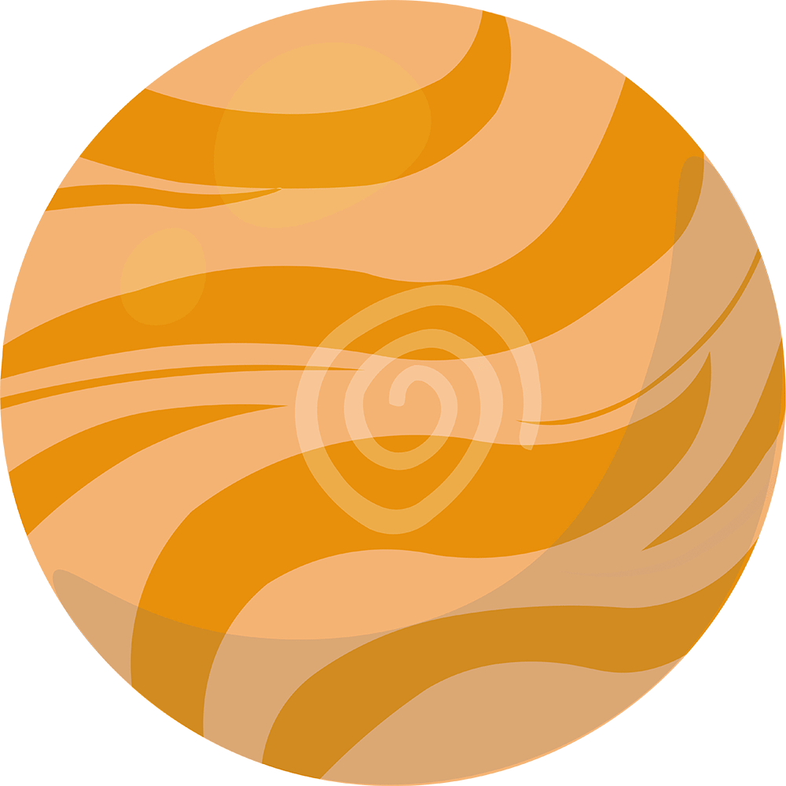
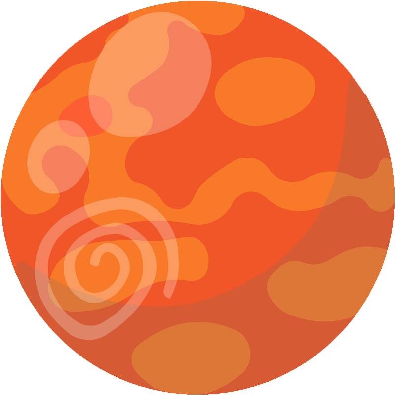
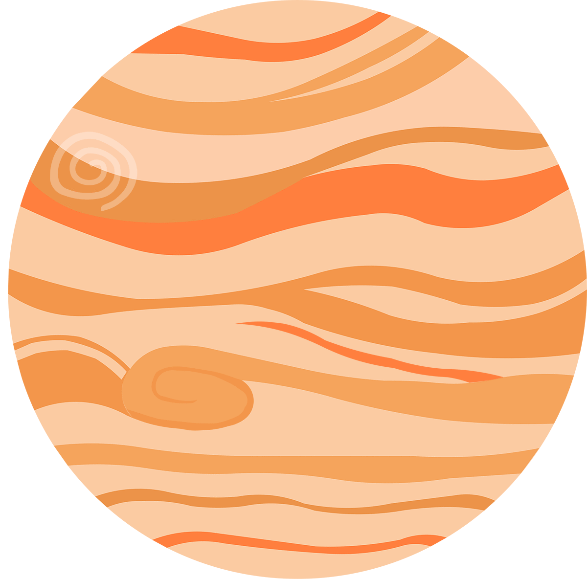
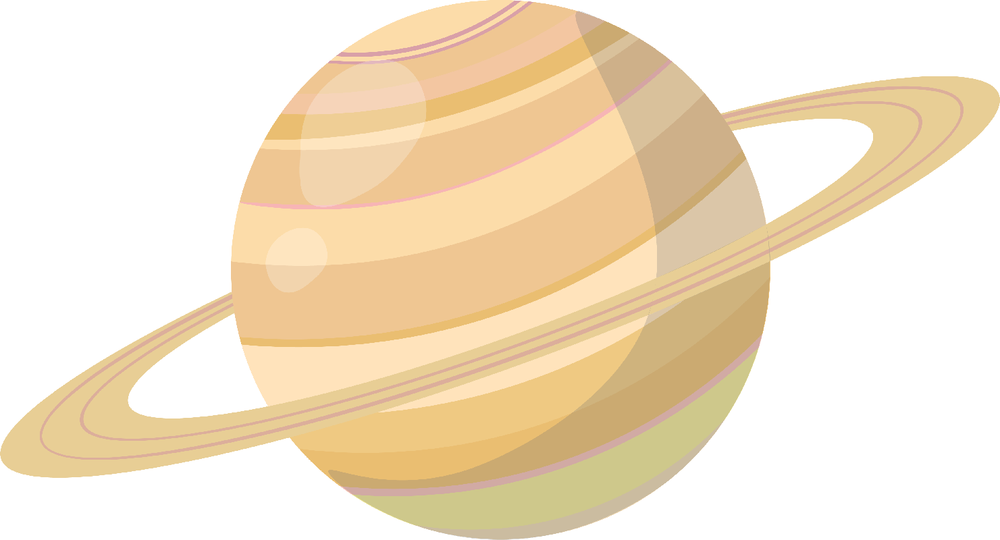
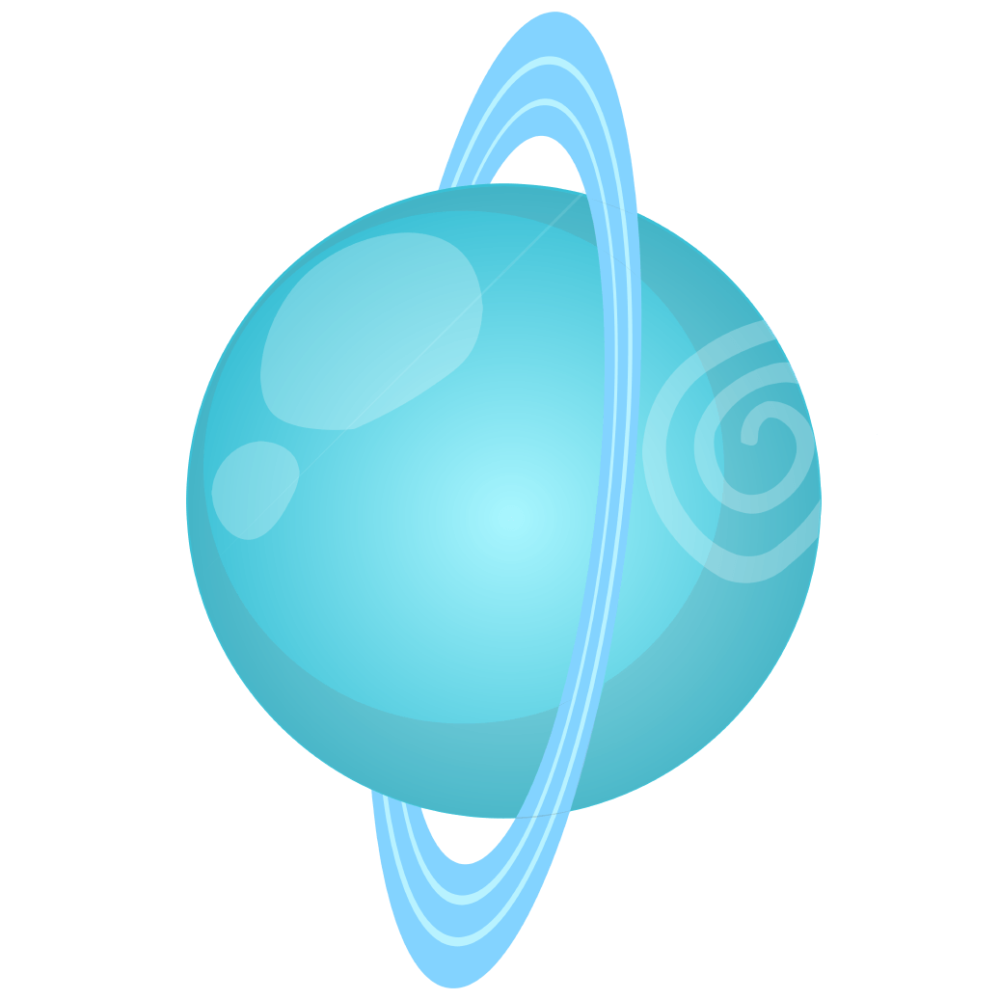

太阳 ⊙
太阳-太阳系的中心天体
太阳是在大约45.7亿年前在一个坍缩的氢分子云内形成。太阳形成的时间以两种方法测量：太阳目前在主序带上的年龄，使用恒星演化和太初核合成的电脑模型确认，大约就是45.7亿年。这与放射性定年法得到的太阳最古老的物质是45.67亿年非常的吻合。太阳在其主序的演化阶段已经到了中年期，在这个阶段的核聚变是在核心将氢聚变成氦。每秒中有超过400万吨的物质在太阳的核心转化成能量，产生中微子和太阳辐射。以这个速率，到目前为止，太阳大约转化了100个地球质量的物质成为能量，太阳在主序带上耗费的时间总共大约为100亿年。
太阳是一个巨大而炽热的气体星球。知道了日地距离，再从地球上测得太阳圆面的视角直径，从简单的三角关系就可以求出太阳的半径为69.6万千米，是地球半径的109倍。由此可以算出太阳的体积为地球的130万倍。
由太阳的体积和质量，可以计算出太阳平均密度为1.409克/厘米³，约为地球平均密度的0.26倍。太阳表面的重力加速度等于2.7398´10厘米/秒，约为地球表面重力加速度的28倍，如果一个人站在太阳表面，那么他的体重将会是在地球上的20倍[2] 。太阳表面的逃逸速度约617.7公里/秒，任何一个中性粒子的速度必须大于这个值，才能脱离太阳的吸引力而跑到宇宙空间中去。 太阳只是宇宙中一颗十分普通的恒星，但它却是太阳系的中心天体。太阳系中，包含我们的地球在内的八大行星、一些矮行星、彗星和其它无数的太阳系小天体，都在太阳的强大引力作用下环绕太阳运行。太阳系的疆域庞大，仅以冥王星为例，其运行轨道距离太阳就将近40个天文单位，也就是60亿千米之遥远，而实际上太阳系的范围还要数十倍于此
水星 ☿
水星 太阳系中最小的行星
水星（英语：Mercury，拉丁语：Mercurius）是太阳系八大行星最内侧也是最小的一颗行星，也是离太阳最近的行星。符号为☿， 中国称为辰星，有着八大行星中最大的轨道偏心率。它每87.968个地球日绕行太阳一周，而每公转2.01周同时也自转3圈。
水星的英文名字Mercury来自罗马神墨丘利。符号是上面一个圆形下面一个交叉的短垂线和一个半圆形(Unicode:?).是墨丘利所拿魔杖的形状。在第5世纪，水星实际上被认为成二个不同的行星，这是因为它时常交替地出现在太阳的两侧。当它出现在傍晚时，它被叫做墨丘利；但是当它出现在早晨时，为了纪念太阳神阿波罗，它被称为阿波罗。毕达哥拉斯后来指出他们实际上是相同的一颗行星。中国古代则称水星为“辰星”。
水星是太阳系中密度第二高的行星，仅次于地球。据此，科学家们估计水星内部必定存在一个超大的内核，其内核质量甚至可以占到其总质量的2/3，而相比之下，地球的内核区质量只占地球总质量的1/3。美国华盛顿卡内基研究院地磁学系主任，美国信使号水星探测器项目首席科学家西恩•所罗门（Sean Solomon）教授表示：科学界的观点是认为在太阳系早期的狂暴撞击时代，水星曾遭遇严重撞击，导致其失去了密度较低的一部分外壳，因此留下了密度相对较大的部分。而此次信使号探测器的任务中有一项便是通过对水星进行全地表化学成分分析来检验这个理论。
金星 ♀
中国古人称金星为“太白”或“太白金星”，也称“启明”或“长庚”（傍晚出现时称“长庚”，清晨出现时称“启明”）古希腊人称为阿佛洛狄忒，是希腊神话中爱与美的女神。而在罗马神话中爱与美的女神是维纳斯，因此金星也称作维纳斯（Venus）。维纳斯是爱与美的女性之神，所以金星的天文符号就是女性的标志：♀，也有人形象地将这个符号比喻为“维纳斯的梳妆镜”。 金星自转方向跟天王星一样与其它行星相反，是自东向西。因此，在金星上看，太阳是西升东落。金星绕太阳公转的轨道是一个很接近正圆的椭圆形偏差不超过1°且与黄道面接近重合，其公转速度约为每秒35公里，公转周期约为224.70天。但其自转周期却为243日，也就是说，金星的自转恒星日一天比一年还长。不过按照地球标准，以一次日出到下一次日出算一天的话则金星上的一年要远远小于243天。这是因为金星是逆向自转的缘故；在金星上看日出是在西方，日落在东方；一个日出到下一个日出的昼夜交替只是地球上的116.75天。在地球上看金星与太阳的最大视角不超过48°，因此金星不会整夜出现在夜空中。我国民间称黎明时分的金星为启明星，傍晚时分的金星为长庚星。
关于金星的内部结构，还没有直接的资料，从理论推算得出，金星的内部结构和地球相似，有一个半径约3﹐100公里的铁-镍核，中间一层是主要由硅﹑氧﹑铁﹑镁等的化合物组成的“幔”，而外面一层是主要由硅化合物组成的很薄的“壳”。
地球 ⊕

地球 我们赖以生存的家园
地球（Earth）是太阳系八大行星之一，按离太阳由近及远的次序排为第三颗，也是太阳系中直径、质量和密度最大的类地行星，距离太阳1.5亿公里。地球自西向东自转，同时围绕太阳公转。现有40~46亿岁，[1] 它有一个天然卫星——月球，二者组成一个天体系统——地月系统。46亿年以前起源于原始太阳星云。
地球赤道半径6378.137千米，极半径6356.752千米，平均半径约6371千米，赤道周长大约为40076千米，呈两极稍扁赤道略鼓的不规则的椭圆球体。地球表面积5.1亿平方公里，其中71%为海洋，29%为陆地，在太空上看地球呈蓝色。
地球内部有核、幔、壳结构，地球外部有水圈、大气圈以及磁场。地球是目前宇宙中已知存在生命的唯一的天体，是包括人类在内上百万种生物的家园。[1] 地球圈层分为地球外圈和地球内圈两大部分。地球外圈可进一步划分为四个基本圈层，即大气圈、水圈、生物圈和岩石圈；地球内圈可进一步划分为三个基本圈层，即地幔圈、外核液体圈和固体内核圈。此外在地球外圈和地球内圈之间还存在一个软流圈，它是地球外圈与地球内圈之间的一个过渡圈层，位于地面以下平均深度约150公里处。这样，整个地球总共包括八个圈层，其中岩石圈、软流圈和地球内圈一起构成了所谓的固体地球。对于地球外圈中的大气圈、水圈和生物圈，以及岩石圈的表面，一般用直接观测和测量的方法进行研究。而地球内圈，主要用地球物理的方法，例如地震学、重力学和高精度现代空间测地技术观测的反演等进行研究。地球各圈层在分布上有一个显著的特点，即固体地球内部与表面之上的高空基本上是上下平行分布的，而在地球表面附近，各圈层则是相互渗透甚至相互重叠的，其中生物圈表现最为显著，其次是水圈。
火星 ♂
火星（Mars）是太阳系八大行星之一，天文符号是♂，是太阳系由内往外数的第四颗行星，属于类地行星，直径约为地球的53%，自转轴倾角、自转周期均与地球相近，公转一周约为地球公转时间的两倍。橘红色外表是地表的赤铁矿（氧化铁）。我国古书上将火星称为“荧惑”，西方古代（古罗马）称为“战神玛尔斯星”。 火星基本上是沙漠行星，地表沙丘、砾石遍布且没有稳定的液态水体（前不久，美国宇航局公布火星上有少量的水）。二氧化碳为主的大气既稀薄又寒冷，沙尘悬浮其中，每年常有尘暴发生。火星两极皆有水冰与干冰组成的极冠会随着季节消长。 火星是太阳系由内往外数第四颗行星，属于类地行星，直径约为地球直径的一半，自转轴倾角、自转周期相近公转一周则花两倍时间。在西方称为战神玛尔斯星，中国则称为荧惑星因为它荧荧如火，位置、亮度时常变动。其橘红色外表是因为地表被赤铁矿（氧化铁）覆盖，英文里前缀areo-即为火星，火星被认为是太阳系中最有可能存在地外生命的行星 火星在西方被称为战神，这或许是由于它鲜红的颜色而得来的，所以火星有时被称为“红色行星”。（在希腊人之前，古埃及人曾把火星作为农耕之神来供奉。后来的古希腊人把火星作为战神阿瑞斯，而古罗马人继承了希腊人的神话，将其称为“战神玛尔斯”。北欧神话里，火星是战神提尔。而月份三月的名字也是得自于火星。)
火星在中国古称“荧惑星”，这是由于火星呈红色，荧光像火，在五行中象征着火它的亮度常有变化；而且在天空中运动，有时从西向东，有时又从东向西，情况复杂，令人迷惑，所以中国古代叫它“荧惑”，有“荧荧火光、离离乱惑”之意。[3] 火星和地球一样拥有多样的地形，有高山、平原和峡谷，火星基本上是沙漠行星，地表沙丘、砾石遍布。由于重力较小等因素，地形尺寸与地球相比亦有不同的地方。南北半球的地形有着强烈的对比：北方是被熔岩填平的低原，南方则是充满陨石坑的古老高地，而两者之间以明显的斜坡分隔；火山地形穿插其中，众多峡谷亦分布各地，南北极则有以干冰（固态的二氧化碳）和水冰组成的极冠，风成沙丘亦广布整个星球。
木星 ♃
木星是太阳系八大行星之一，按离太阳由近及远的次序排列为第五颗。它也是太阳系最大的行星，自转最快的行星。中国古代用它来纪年，因而称为岁星。 在西方称它为朱庇特，是罗马神话中的众神之王，相当于希腊神话中的宙斯。
木星（Jupiter）是太阳系八大行星中体积最大、自转最快的行星，从内向外的第五颗行星。它的质量为太阳的千分之一，是太阳系中其它七大行星质量总和的2.5倍。木星与土星、天王星、海王星皆属气体行星，因此四者又合称类木行星（木星和土星合称巨行星）。2012年2月3日科学家称发现了木星2颗新卫星，累计卫星达68颗。 木星是一个气态巨行星。木星主要由氢组成，其次为氦，占总质量的25%，占所有太阳系行星的70%岩核则含有其他较重的元素。气态行星没有实体表面，它们的气态物质密度随深度的变大而不断加大。我们所看到的通常是大气中云层的顶端，压强比1个大气压略高。
土星 ♄
土星（英文Saturn，拉丁文Saturnus），为太阳系八大行星[1] 之一，至太阳距离（由近到远）位于第六，体积则仅次于木星。并与木星、天王星及海王星同属类木行星。欧洲古代（古希腊）称土星为克洛诺斯星，古代中国亦称之镇星或填星。 土星是一个巨型气体行星，是太阳系中仅次于木星的第二大行星。土星的英文名字Saturn(以及其他绝大部分欧洲语言中的土星名称)是以罗马神的农神萨杜恩命名的。中国古代称之为镇星或填星 土星主要由氢组成，还有少量的氦与微量元素，内部的核心包括岩石和冰，外围由数层金属氢和气体包裹着。最外层的大气层在外观上通常情况下都是平淡的，虽然有时会有长时间存在的特征出现。土星的风速高达1800公里/时，明显的比木星上的风速快。土星的行星磁场强度介于地球和更强的木星之间。
土星有一个显著的行星环（可以通过望远镜直接观测），主要的成分是冰的微粒和较少数的岩石残骸以及尘土。已经确认的土星的卫星总共有62颗。其中，土卫六是土星系统中最大和太阳系中第二大的卫星（半径2575km）（太阳系最大的卫星是木星的木卫三，半径2632km）。 虽然只有少量的直接资料，但土星的内部结构仍被认为与木星相似，即有一个被氢和氦包围着的小核心。岩石核心的构成与地球相似但密度更高。在核心之上，有更厚的液体金属氢层，然后是数层的液态氢和氦层，在最外层是厚达1,000 公里的大气层，也存在着各种型态冰的踪迹。估计核心区域的质量大约是地球质量的9-22倍。土星有非常热的内部，核心的温度高达11 700 ℃，并且辐射至太空中的能量是它接受来自太阳的能量的2.5倍。大部分能量是由缓慢的重力压缩（克赫历程）产生，但这还不能充分解释土星的热能制造过程。额外的热能可能由另一种机制产生：在土星内部深处，液态氦的液滴如雨般穿过较轻的氢，在此过程中不断地通过摩擦而产生热。
天王星 ♅
天王星的英文名称Uranus来自古希腊神话中的天空之神乌拉诺斯（Οὐρανός），是克洛诺斯的父亲，宙斯的祖父。与在古代就为人们所知的五颗行星（水星、金星、火星、木星、土星）相比，天王星的亮度也是肉眼可见的，但由于亮度较暗、绕行速度缓慢并且由于当时望远镜观测能力不足，未被古代的观测者认定为是一颗行星。直到1781年3月13日，威廉•赫歇耳爵士宣布他发现了天王星，首度扩展了太阳系已知的界限，这也是第一颗使用望远镜发现的行星。
天王星（Uranus）是太阳系由内向外的第七颗行星（18.37~20.08天文单位），其体积在太阳系中排名第三（比海王星大），质量排名第四（小于海王星），几乎横躺着围绕太阳公转。[1] 天王星大气的主要成分是氢和氦，还包含较高比例的由水、氨、甲烷等结成的“冰”，但是氨和甲烷在天王星上只能以液体来存在。与可以探测到的碳氢化合物。天王星是太阳系内大气层最冷的行星，最低温度只有49K（-224℃）。其外部的大气层具有复杂的云层结构，水在最低的云层内，而甲烷组成最高处的云层。 相比较而言，天王星的内部则是由冰和岩石所构成。
海王星 ♆
海王星（Neptune）是八大行星中的远日行星，按照行星与太阳的距离排列海王星是第八颗行星，直径上第四大行星，质量上第三大行星。它的亮度仅为7.85等，只有在天文望远镜里才能看到它。由于它那荧荧的淡蓝色光，所以西方人用罗马神话中的海神——“尼普顿”的名字来称呼它。在中文里，把它译为海王星。 海王星在直径和体积上小于天王星，但质量却大于天王星，大约是地球的17倍，而它的姊妹行星天王星因密度较低，质量大约是地球的14倍。 海王星的大气层以氢和氦为主，还有微量的甲烷，大气层中的甲烷，是使行星呈现蓝色的原因之一。海王星有着太阳系最强烈的风暴，测量到的风速高达2100km/h。海王星云顶的温度是-218 ℃（55K），因为距离太阳最远，是太阳系最冷的地区之一。海王星核心的温度约8000℃，和大多数已知的行星相似。 以其1.0247e+26 千克的质量，海王星是介于地球和巨行星（指木星和土星）之间的的中等大小行星：它的质量既是地球质量的17倍，也是木星质量的1/18。因为它们质量较典型类木行星小，而且密度、组成成份、内部结构也与类木行星有显著差别，海王星和天王星一起常常被归为类木行星的一个子类：冰巨星。在寻找太阳系外行星领域，海王星被用作一个通用代号，指所发现的有着类似海王星质量的系外行星，就如同天文学家们常常说的那些系外“木星”。
因为轨道距离太阳很远，海王星从太阳得到的热量很少，所以海王星大气层顶端温度只有-218 ℃（55 K），而由大气层顶端向内温度稳定上升。和天王星类似，星球内部热量的来源仍然是未知的，而结果却是显著的：作为太阳系最外侧的行星，海王星内部能量却大到维持了太阳系所有行星系统中已知的最高速风暴。对其内部热源有几种解释，包括行星内核的放射热源，行星生成时吸积盘塌缩能量的散热，还有重力波对平流圈界面的扰动。 海王星内部结构和天王星相似。行星核是一个质量大概不超过一个地球质量的由岩石和冰构成的混合体。海王星地幔总质量相当于10到15个地球质量，富含水，氨，甲烷和其它成份。作为行星学惯例，这种混合物被叫作冰，虽然其实是高度压缩的过热流体。这种高电导的流体通常也被叫作水-氨大洋。大气层包括大约从顶端向中心的10%到20%，高层大气主由80%氢和19%氦组成。甲烷，氨和水的含量随高度降低而增加。更内部大气底端温度更高，密度更大，进而逐渐和行星地幔的过热液体混为一体。海王星内核的压力是地球表面大气压的数百万倍通过比较转速和扁率可知海王星的质量分布不如天王星集中。